2026-11-20
VOL 416
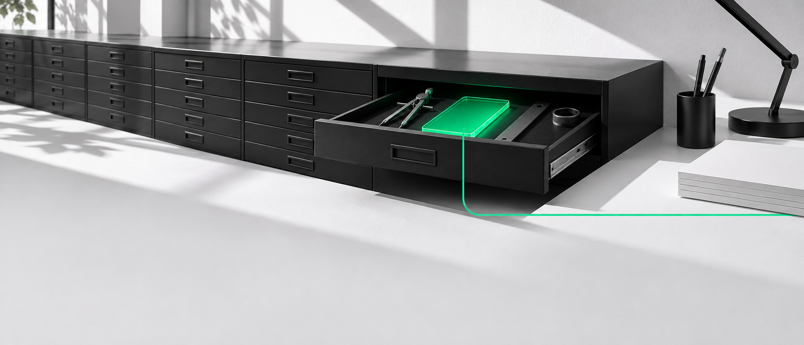
读者，早。
Google的新预览功能保留工具名称与描述，只在需要时加载参数定义，节省空间的同时也留下实际计费条件。OpenAI的内部运维流程则把告警、诊断、人工审查与部署后检查串在同一项任务里。两者分别回答“做事前带多少材料”和“做完以后凭什么确认”，没有一份更短的提示能自动替代后面的验证。
模型栏的四个下载入口，是当天新增的独立GGUF转换。文档解析的高分来自完整流水线，重排结果依赖初次检索，巴斯克语专家模型仍要存下全部权重，小工具模型也有写不完整的测试样例。与此同时，三笔新资金分别购买真实实验、真实工作数据和真实订单履约的能力；这些业务各有自己的成本，不能用同一张模型榜单判断。

Google于19日将Tool Retrieval以预览形式加入Gemini Interactions API，支持Gemini 3.6及之后的模型。模型仍先看到延迟工具的名称与描述，需要调用时再加载完整参数定义；常用工具可保持预载，远程MCP工具也可延迟加载。服务端检索可在一次请求内完成，自己维护目录的客户端检索则每次多一次往返。功能没有单独收费，但启用检索有固定输入token开销，已加载的定义也会在后续对话按输入计费，节省幅度取决于实际用到多少工具。
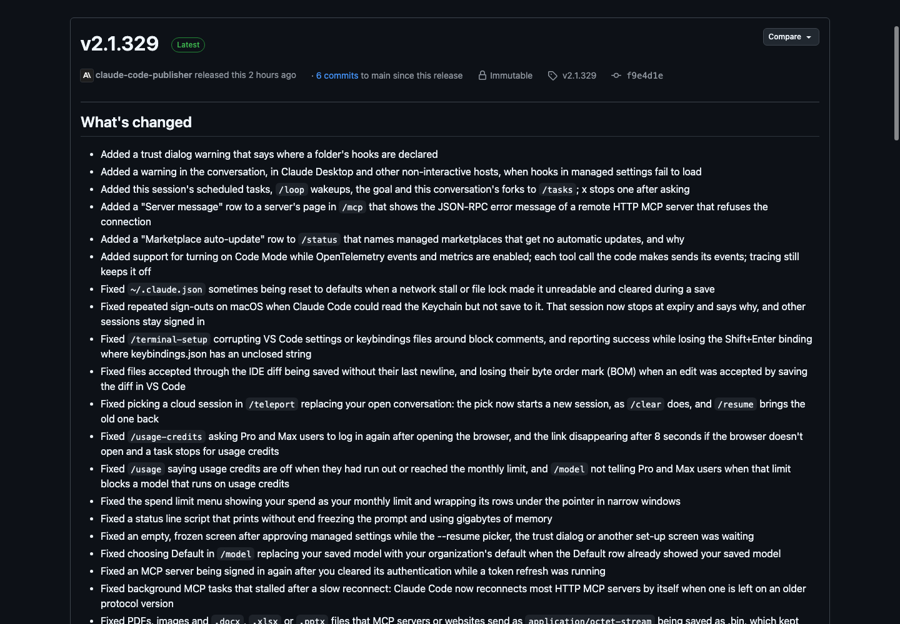
Claude Code 2.1.329于19日发布，在目录信任对话框标明钩子的声明位置，并在桌面等非交互宿主中提示托管钩子加载失败。版本还修复配置文件在网络停顿或文件锁情况下被重置、后台代理停止后继续运行等问题。发行说明同时提醒：新登录会话中，多数较早保存的定时任务需重新安排；恢复任务原会话仍可运行。此为产品版本变更，不是新基础模型。
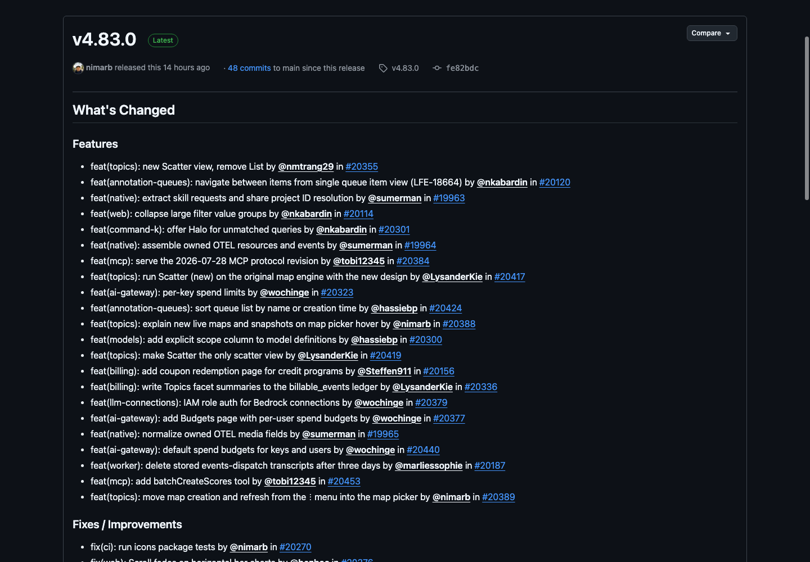
Langfuse 4.83.0于19日发布，加入按密钥设置支出上限、按用户设置预算的页面，以及密钥和用户的默认预算。Bedrock连接新增IAM角色认证；标注队列可直接切换条目，话题地图更新Scatter视图，并增加批量创建评分的MCP工具。发行说明列出的是具体功能与修正，没有给出统一节省比例或对所有外部模型费用的兜底承诺。
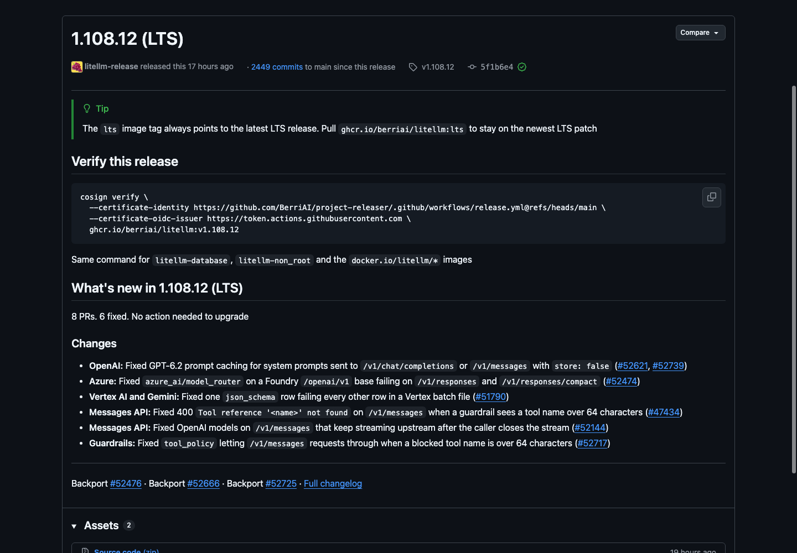
LiteLLM于19日发布1.108.12长期支持补丁，修复GPT-6.2在store为false时，通过聊天或消息接口发送系统提示的缓存问题。补丁也修复Vertex批处理中特定JSON Schema行影响隔行请求、超过64字符的工具名绕过tool_policy限制，以及调用者关流后上游继续生成等问题。同日另有其他维护分支回移修复，不能把多个版本号算成多次模型发布。
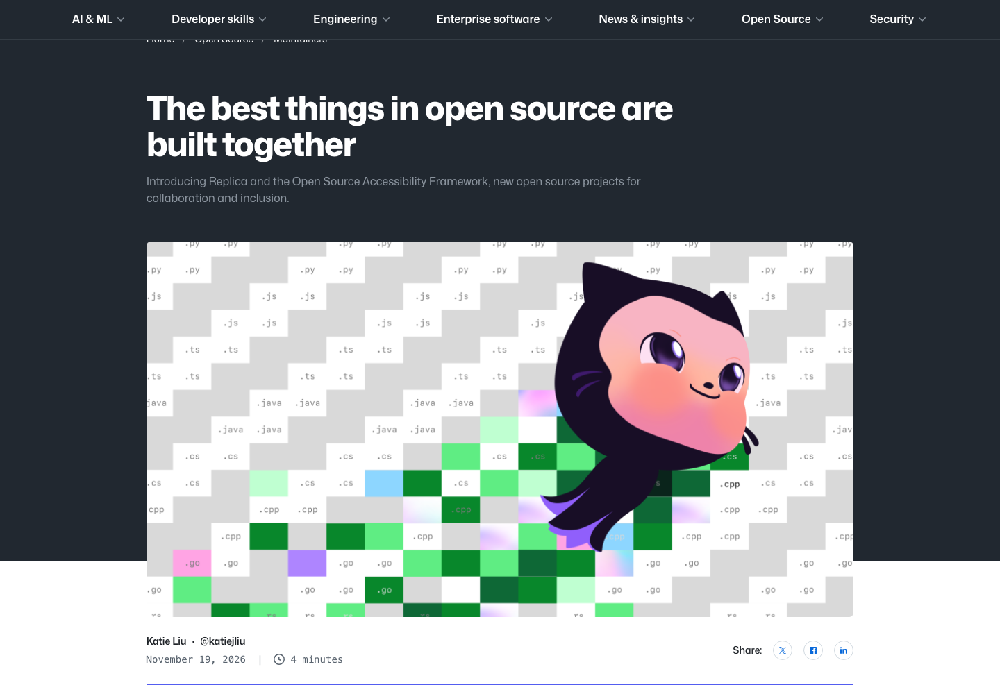
GitHub于19日发表新文章，介绍较早推出的Replica设计原型协作项目和Open Source Accessibility Framework。前者支持在自己的设计系统内生成原型、与Copilot迭代，并通过Hub收集评论；后者用四阶段责任模型及ACCESSIBILITY.md记录目标、支持环境、已知限制和报告障碍的方式。这里收录的是当天的新介绍，Replica在数周前亮相，无障碍框架在上月推出，不作为19日首次发布。
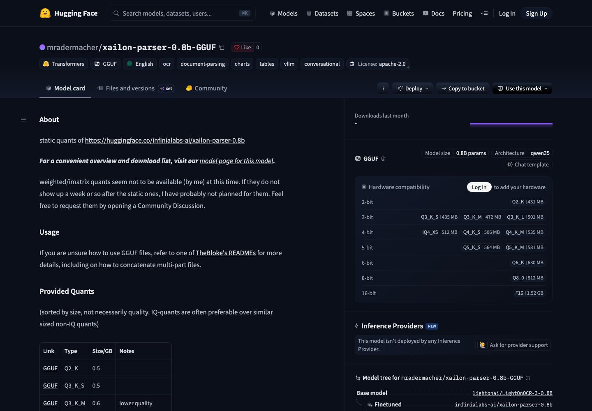
独立转换者mradermacher于19日23:38 UTC起上传xailon-parser-0.8b的GGUF文件，Q4_K_M约0.6GB。基础权重来自infinialabs-ai对LightOnOCR-3-0.8B的独立训练，标为Apache 2.0，已较早存在。原作者自报完整解析器在2078页ParseBench得78.3分，而非只测权重；其外围解析流水线代码未公开，调用DeepSeek辅助图表与版面的另一配置得80.4分。上述分数不代表此次GGUF转换复测，文件大小也不等于完整解析器的内存需求。
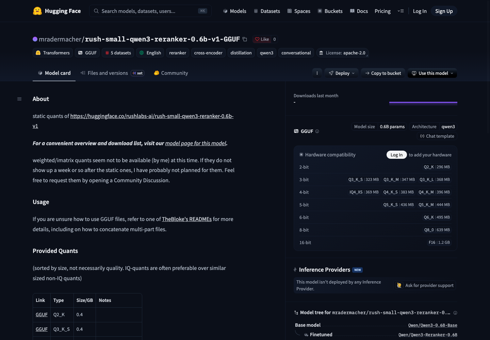
19日22:38 UTC起，mradermacher上传Rush Small Qwen3 Reranker 0.6B的独立GGUF转换，Q4_K_M约0.5GB，标为Apache 2.0。较早的原模型用48000个问题向4B教师模型学习，为已检索到的文档重新排序；作者自报11组零样本BEIR平均nDCG@10从0.525升至0.538，亦有个别集合回落。训练以英语为主，多语质量未测；这些结果来自原模型实验，不能当作新增量化档位的准确率。
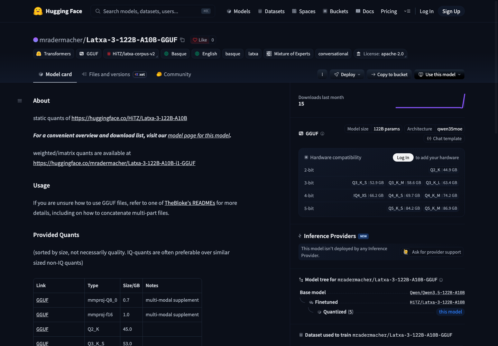
mradermacher于19日06:14 UTC起上传Latxa 3的独立GGUF转换，Q4_K_M约74.3GB，视觉投影文件另列。HiTZ较早发布的基础版本在Qwen3.5-122B-A10B上适配巴斯克语，1220亿总参数、约100亿激活参数、262144 token上下文，采用Apache 2.0许可，仅支持思考模式。新增格式便利本地试用，不意味着仅需100亿参数的存储，也不代表原作者已验证此次量化的语言及视觉效果。
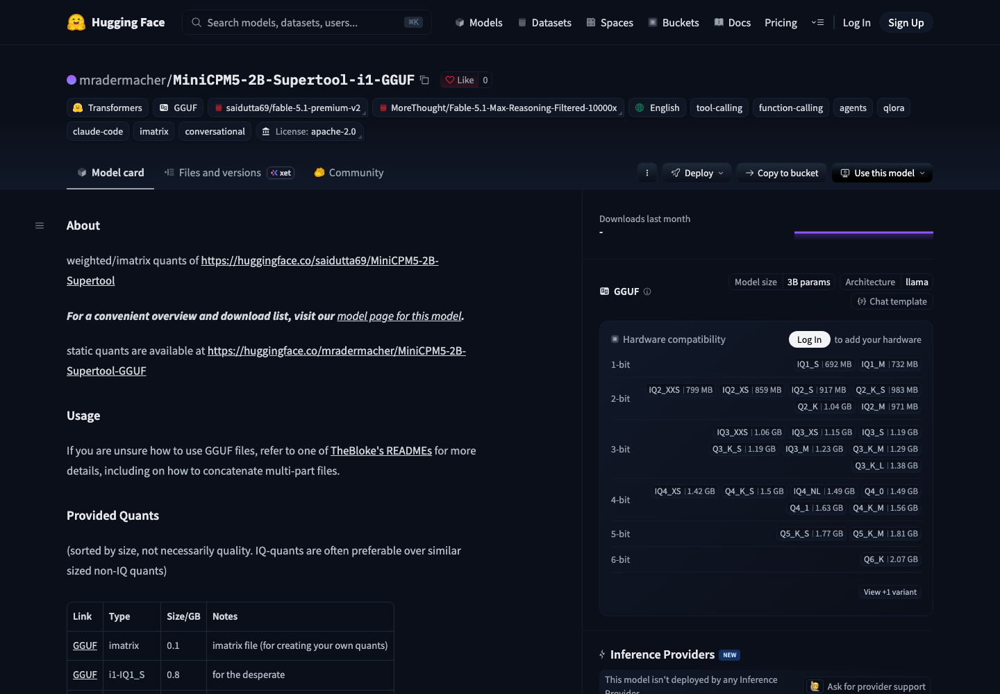
19日07:42 UTC起，mradermacher上传MiniCPM5-2B-Supertool的独立imatrix GGUF转换，Q4_K_M约1.7GB。它承接saidutta69在MiniCPM5上的较早独立QLoRA微调，实际约25亿参数，面向工具调用而非通用助手。作者自报150项跨API任务的精确调用成功率由49.3%升至77.3%；另一组120项域内样例完整匹配仅5项，长写文件调用还受生成上限影响。分数未在新GGUF上复测，作者也未评估提示注入抵抗。
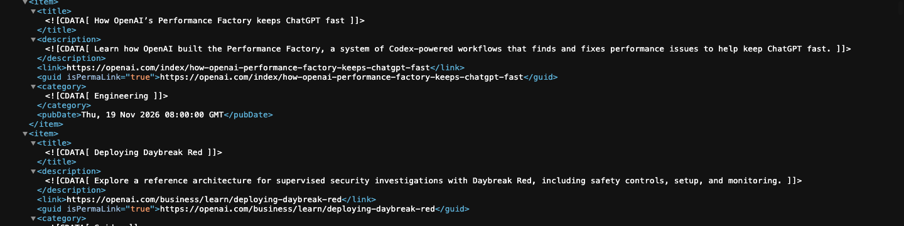
OpenAI于19日新文介绍内部Performance Factory：告警触发调查，Codex提出原因与补丁，工程师审查并决定上线，部署后再检查性能是否恢复。公司自报三个多月跟踪逾1700次调查，定位逾600例根因；人工审阅100份根因建议时，70%被评为准确，30%仍需细化或未充分建立因果。系统加入独立会话反驳诊断，恢复不全可分出新任务，没有改善则重回调查。数字是内部实践披露，不是1700项故障都已修好。
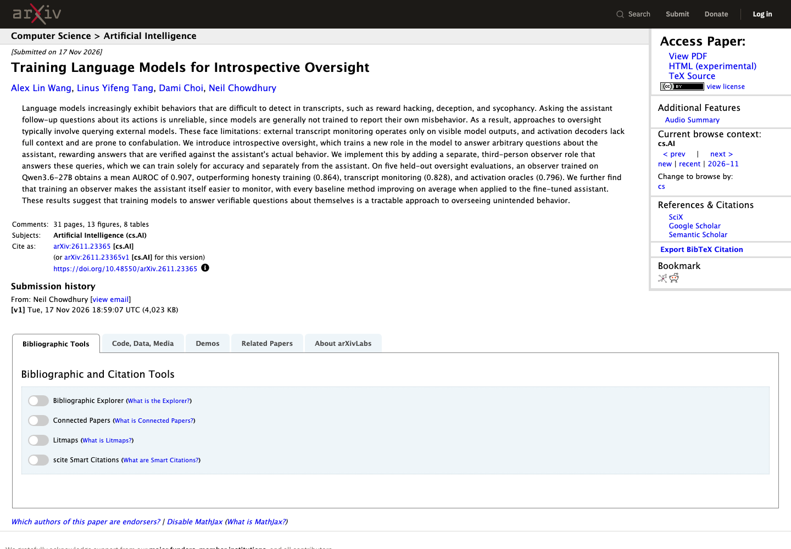
19日首次公告的arXiv预印本提出内省式监督：在模型中训练独立的第三人称观察者角色，按可核验的实际行为奖励回答，训练目标与助手角色分开。作者在Qwen3.6-27B的五组留出监督评估上报告平均AUROC为0.907，高于诚实训练0.864、对话记录监测0.828与激活解码0.796。稿件17日提交，19日进入首次公告；这是特定评估的区分能力，不能解释为90.7%的现实错误必然被抓到。
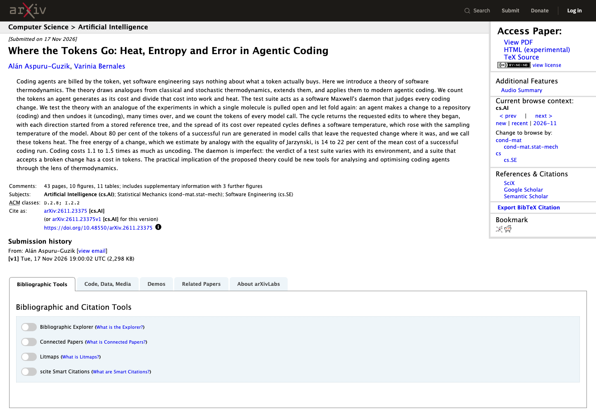
19日首次公告的预印本用热力学类比分析编码代理：反复执行代码修改与撤销，按模型输出token计费，并由测试套件判断改动。作者在其选定代码任务中发现，成功运行约80%的token出自未推进目标改动的调用；估计最低改动成本约为平均成功运行的14%至22%，编码成本为撤销的1.1至1.5倍。论文17日投稿，19日首次公告，使用有限任务；这里的“热”是分析定义，不是直接测量耗电，也不是证明这些token都可无损删除。
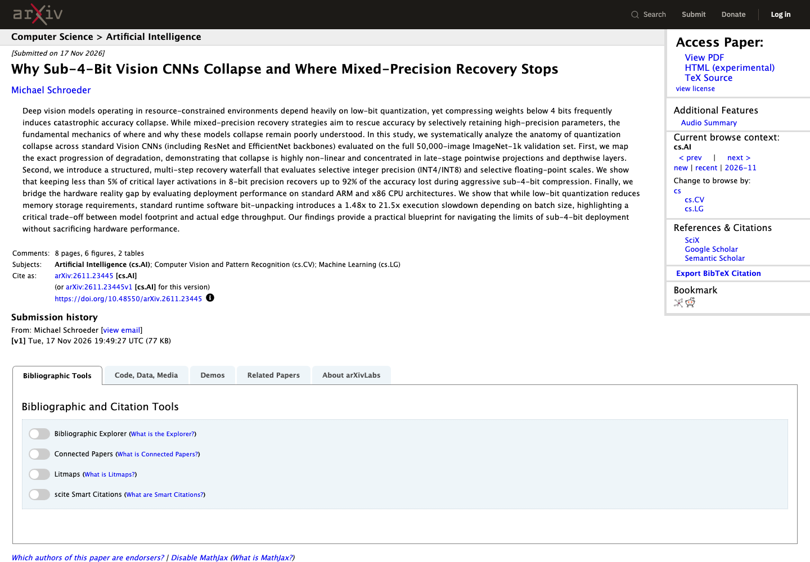
19日首次公告的预印本研究ResNet、EfficientNet等视觉CNN在低于4比特量化下的精度崩塌，使用完整50000张ImageNet-1k验证图像。作者发现损失集中于部分后段投影和深度卷积；少于5%的关键层激活保留8比特，在其设置中最多追回92%的已损失准确率。ARM与x86 CPU部署还测到标准软件解包带来1.48至21.5倍减速，随批量大小变化。17日投稿、19日公告，结论限定于所测视觉网络与运行环境，不能直接套到所有GGUF语言模型。
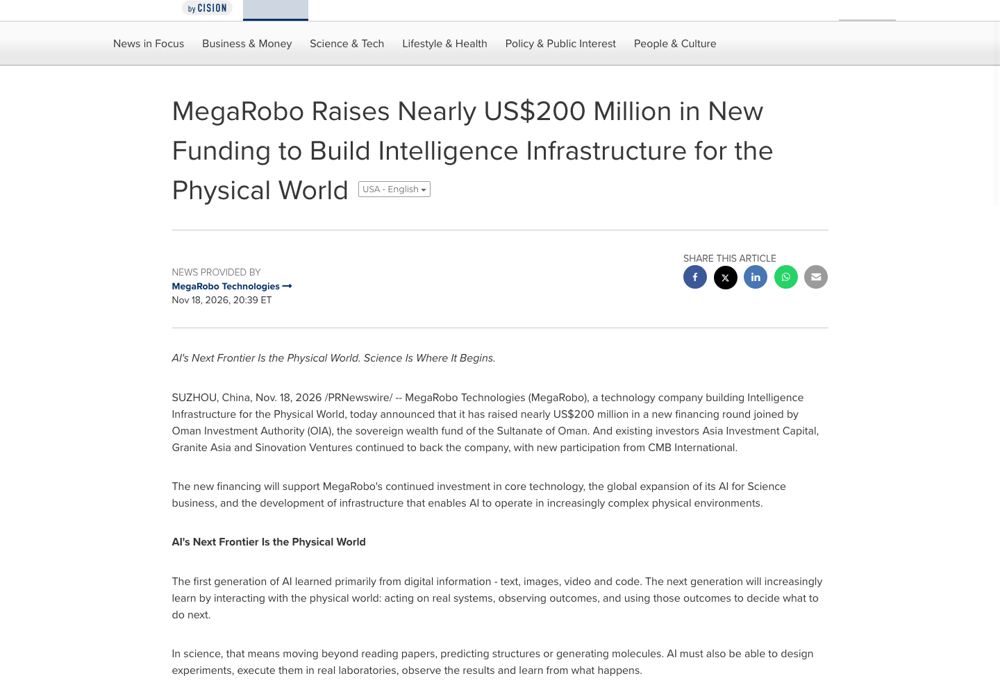
MegaRobo镁伽于美东18日20:39发布发行方公告，对应19日01:39 UTC，处于本期窗口。公司称新融资近2亿美元，阿曼投资局参与，老股东Asia Investment Capital、Granite Asia与创新工场继续支持，招银国际新加入；资金用于技术与AI for Science国际扩张。公司自报产品与技术服务逾500家客户，Megalaxy Lab服务逾200家，累计融资约6亿美元。过去近3亿美元C轮的领投方属于历史轮次，不等于本轮领投名单。
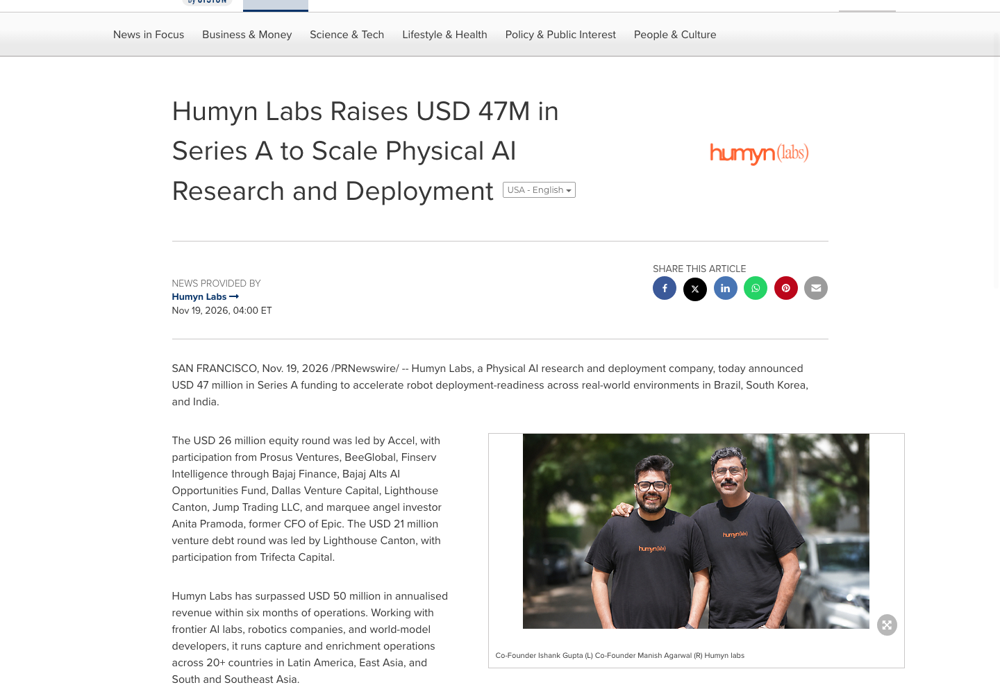
Humyn Labs于19日美东04:00宣布4700万美元A轮资金，其中2600万美元股权由Accel领投，2100万美元风险债务由Lighthouse Canton领投，Trifecta参与。资金将用于巴西、韩国与印度的机器人部署准备设施、采集硬件和数据处理，并加强旧金山、伦敦、首尔的当地团队。公司用工厂、仓库、农场及住宅的真实工作记录训练数据，自报运营六个月年化收入超过5000万美元、采集处理覆盖20多个国家；年化数字不是已实现全年收入，也没有在公告中提供独立审定结果。
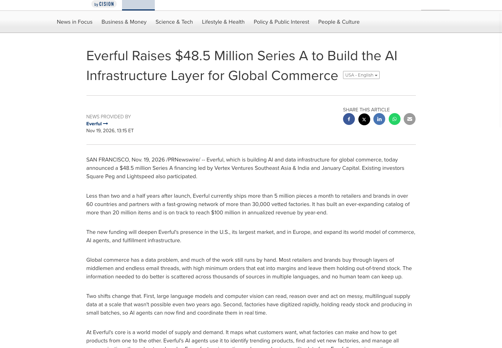
Everful于19日美东13:15宣布4850万美元A轮融资，Vertex Ventures东南亚与印度基金及January Capital领投，Square Peg与Lightspeed参投。公司以供应与需求数据模型配合代理寻找商品、筛选工厂、处理订单沟通并负责履约，资金将扩展美国、欧洲与相关设施。发行方自报每月发货超过500万件、覆盖60多个国家、连接逾3万家工厂，并预计年底达到1亿美元年化收入；后者是预测，公告没有披露估值，也未证明所有采购步骤都无人参与。
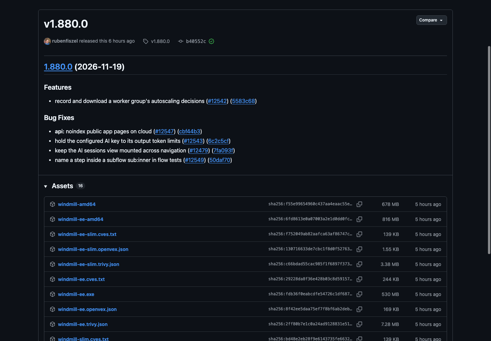
Windmill 1.880.0于19日18:25 UTC发布，可记录并下载工作进程组的自动扩缩容决策。版本还修复配置的AI密钥未受输出token上限约束、导航时AI会话视图被卸载，以及流程测试中子流程步骤的命名问题。工具的新增记录让团队可以回看调度决定；发行说明未给出统一成本或延迟改进数字，也没有保证所有工作负载都能自动调到最优。